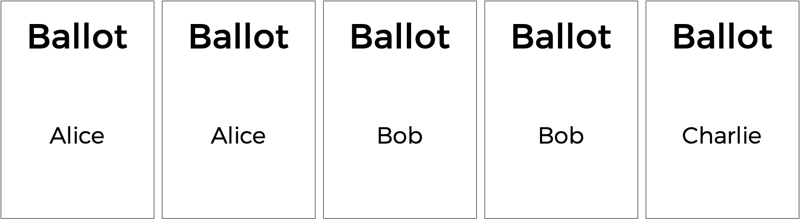

排序复选制
要解决的问题
You already know 关于 多数制 elections, which follow a very simple algorithm for determining the winner of an election: every voter gets one vote, and the candidate with the most votes wins.
But the 多数制 vote does have some disadvantages. What happens, for instance, in an election with three candidates, and the ballots below are cast?

一份 多数制 vote would here declare a tie between Alice and Bob, since each has two votes. But is that the right outcome?
There’s another kind of voting system known as a ranked-choice voting system. In a ranked-choice system, voters can vote for 更多 than one candidate. Instead of just voting 的ir top choice, they can rank the candidates in order of preference. The resulting ballots might therefore look like the below.

Here, each voter, in addition to specifying their first preference candidate, has also indicated their second and third choices. And now, what was previously a tied election could now have a winner. The race was originally tied between Alice and Bob, so Charlie was out of the running. But the voter who chose Charlie preferred Alice over Bob, so Alice could here be declared the winner.
Ranked choice voting can also solve yet another potential drawback of 多数制 voting. Take a look at the following ballots.

Who should win this election? In a 多数制 vote where each voter chooses their first preference only, Charlie wins this election with four votes compared to only three for Bob and two for Alice. But a majority of the voters (5 out of the 9) would be happier with either Alice or Bob instead of Charlie. By considering ranked preferences, a voting system可能是 able to choose a winner that better reflects the preferences of the voters.
One such ranked choice voting system is the instant 排序复选制 system. In an instant 排序复选制 election, voters can rank as many candidates as they wish. If any candidate has a majority (更多 than 50%) of the first preference votes, that candidate is declared the winner of the election.
If no candidate has 更多 than 50% of the vote, then an “instant 排序复选制” occurrs. The candidate who received the fewest number of votes is eliminated from the election, and anyone who originally chose that candidate as their first preference now has their second preference considered. Why do it this way? Effectively, this simulates what would have happened if the least popular candidate had not been in the election to begin with.
The process repeats: if no candidate has a majority of the votes, the last place candidate is eliminated, and anyone who voted 的m will instead vote 的ir 下一页 preference (who hasn’t themselves already been eliminated). Once a candidate has a majority, that candidate is declared the winner.
Sounds a bit 更多 complicated than a 多数制 vote, doesn’t it? But it arguably has the benefit of being an election system where the winner of the election 更多 accurately represents the preferences of the voters. In 名为 runoff.c in 的文件夹中名为 runoff, 创建一个 program to simulate a 排序复选制 election.
演示
Distribution Code
下载 the 分发代码
Log into cs50.dev, click on your terminal window, and execute cd by itself. 你应该 find that your terminal window’s prompt resembles the below:
$
下一页 execute
wget https://cdn.cs50.net/2024/fall/psets/3/runoff.zip
in order to 下载 a ZIP called runoff.zip into your codespace.
Then execute
unzip runoff.zip
to create 的文件夹中名为 runoff. You 不再 need the ZIP file, so you can execute
rm runoff.zip
and respond with “y” followed by Enter at the prompt to remove the ZIP file you downloaded.
Now type
cd runoff
followed by Enter to move自己 into (i.e., 打开) that directory. Your prompt should now resemble the below.
runoff/ $
If all was successful, you should execute
ls
and see a file named runoff.c. Executing code runoff.c should 打开 the file where you will type your code for this 问题集. If not, retrace your steps and see if you can determine where you went wrong!
Understand the code in runoff.c
Whenever you’ll extend the functionality of existing code, it’s best to be sure you first understand it in its present state.
Look at the top of runoff.c first. Two constants are defined: MAX_CANDIDATES 的 maximum number of candidates in the election, and MAX_VOTERS 的 maximum number of voters in the election.
// Max voters and candidates
#define MAX_VOTERS 100
#define MAX_CANDIDATES 9
注意 MAX_CANDIDATES is used to size an array, candidates.
// Array of candidates
candidate candidates[MAX_CANDIDATES];
candidates is an array of candidates. In runoff.c a candidate is a struct. Every candidate has a string field 的ir name, an int representing the number of votes they currently have, and a bool value called eliminated that indicates whether the candidate has been eliminated from the election. The array candidates will keep track of all of the candidates in the election.
// Candidates have name, vote count, eliminated status
typedef struct
{
string name;
int votes;
bool eliminated;
}
candidate;
Now you can better understand preferences, the two-dimensional array. The array preferences[i] will represent all of the preferences for voter number i. The integer, preferences[i][j], will store the index of the candidate, from the candidates array, who is the jth preference for voter i.
// preferences[i][j] is jth preference for voter i
int preferences[MAX_VOTERS][MAX_CANDIDATES];
The program also has two global variables: voter_count and candidate_count.
// Numbers of voters and candidates
int voter_count;
int candidate_count;
Now onto main. 注意 after determining the number of candidates and the number of voters, the main voting loop begins, giving every voter a chance to vote. As the voter enters their preferences, the vote function is called to keep track of all of the preferences. If at any point, the ballot is deemed to be invalid, the program exits.
Once all of the votes are in, another loop begins: this one’s going to keep looping through the 排序复选制 process of checking for a winner and eliminating the last place candidate until there is a winner.
The first call here is to a function called tabulate, which should look at all of the voters’ preferences and compute the current vote totals, by looking at each voter’s top choice candidate who hasn’t yet been eliminated. 下一页, the print_winner function should print out the winner if there is one; if there is, the program is over. But otherwise, the program needs to determine the fewest number of votes anyone still in the election received (via a call to find_min). If it turns out that everyone in the election is tied with the same number of votes (as determined by the is_tie function), the election is declared a tie; otherwise, the last-place candidate (or candidates) is eliminated from the election via a call to the eliminate function.
If you look a bit further down in the file, you’ll see that the rest of the functions—vote, tabulate, print_winner, find_min, is_tie, and eliminate—are all left to up to you to complete! 你应该 only modify these functions in 排序复选制.c, though you 五月 #include additional header files atop 排序复选制.c if you’d like
提示
Click the below toggles to 阅读 some advice!
Complete the vote function
Complete the vote function.
- The function takes three arguments:
voter,rank, andname. - If
nameis a match 的名字 of a valid candidate, then you should update the global preferences array to indicate that the votervoterhas that candidate as theirrankpreference. 请记住0is the first preference,1is the second preference, etc. You 五月 assume that no two candidates will have the same名字。 - If the preference is successfully recorded, the function should return
true. The function should returnfalseotherwise. Consider, for instance, whennameis not the名字 of one of the candidates.
As you write your code, consider these 提示:
- 回忆一下
candidate_countstores the number of candidates in the election. - 回忆一下 you can use
strcmpto compare two strings. - 回忆一下
preferences[i][j]stores the index of the candidate who is thejth ranked preference 的ith voter.
Complete the tabulate function
Complete the tabulate function.
- The function should update the number of
voteseach candidate has at this stage in the 排序复选制. - 回忆一下 at each stage in the 排序复选制, every voter effectively votes 的ir top-preferred candidate who has not already been eliminated.
As you write your code, consider these 提示:
- 回忆一下
voter_countstores the number of voters in the election and that, for each voter in our election, we want to count one ballot. - 回忆一下 for a voter
i, their top choice candidate is represented bypreferences[i][0], their second choice candidate bypreferences[i][1], etc. - 回忆一下 the
candidatestructhas a field calledeliminated, which will betrueif the candidate has been eliminated from the election. - 回忆一下 the
candidatestructhas a field calledvotes, which you’ll likely want to update for each voter’s preferred candidate. - 回忆一下 once you’ve cast a vote for a voter’s first non-eliminated candidate, you’ll want to stop there, not continue down their ballot. You can break out of a loop early using
breakinside of a conditional.
Complete the print_winner function
Complete the print_winner function.
- If any candidate has 更多 than half of the vote, their名字 should be printed and the function should return
true. - If nobody has won the election yet, the function should return
false.
As you write your code, consider this 提示:
- 回忆一下
voter_countstores the number of voters in the election. Given that, how would you express the number of votes needed to win the election?
Complete the find_min function
Complete the find_min function.
- The function should return the minimum vote total for any candidate who is still in the election.
As you write your code, consider this 提示:
- You’ll likely want to loop through the candidates找到 one who is both still in the election and has the fewest number of votes. What information should you keep track of as you loop through the candidates?
Complete the is_tie function
Complete the is_tie function.
- The function takes an argument
min, which will be the minimum number of votes that anyone in the election currently has. - The function should return
trueif every candidate remaining in the election has the same number of votes, and should returnfalseotherwise.
As you write your code, consider this 提示:
- 回忆一下 a tie happens if every candidate still in the election has the same number of votes. 笔记, too, that the
is_tiefunction takes an argumentmin, which is the smallest number of votes any candidate currently has. How might you useminto determine if the election is a tie (or, conversely, not a tie)?
Complete the eliminate function
Complete the eliminate function.
- The function takes an argument
min, which will be the minimum number of votes that anyone in the election currently has. - The function should eliminate the candidate (or candidates) who have
minnumber of votes.
演练
如何测试
请务必 test your code to make sure it handles…
- An election with any number of candidate (up to the
MAXof9) - Voting for a candidate by 姓名
- Invalid votes for candidates who are not on the ballot
- Printing the winner of the election if there is only one
- Not eliminating anyone in the case of a tie between all remaining candidates
Correctness
check50 cs50/problems/2025/x/runoff
Style
style50 runoff.c
如何提交
As it is now past 2025-12-31T23:59:00+00:00, you can 不再 提交 this problem!
Best to ensure you are visiting the latest version of CS50x, cs50.harvard.edu/x/2026, and 提交 the 2026 versions of problems from this point